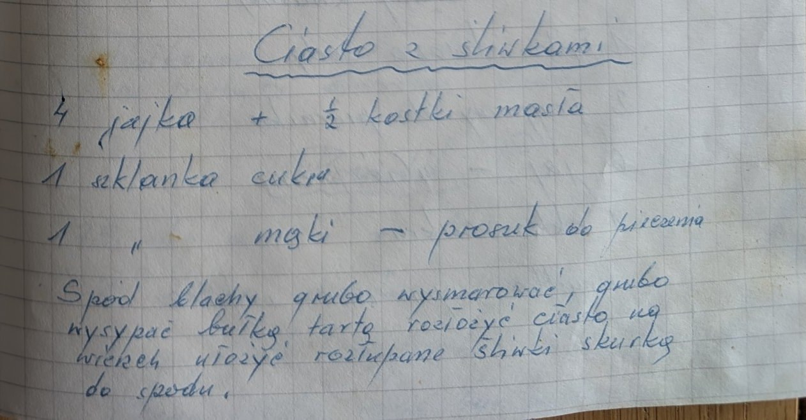

Ciasto ze śliwkami


Składniki
- 4 jajka
- ½ kostki masła
- 1 szklanka cukru
- 1 szklanka mąki
- proszek do pieczenia
- bułka tarta
- śliwki
Przygotowanie
- Spód blachy grubo wysmarować, grubo wysypać bułką tartą.
- Rozłożyć ciasto.
- Na wierzch ułożyć rozłupane śliwki skórką do spodu.
Oryginalny zapis
Ciasto ze śliwkami 4 jajka + ½ kostki masła 1 szklanka cukru 1 " mąki – proszek do pieczenia Spód blachy grubo wysmarować, grubo wysypać bułką tartą rozłożyć ciasto na wierzch ułożyć rozłupane śliwki skórką do spodu.